Product Designer
UX Design Lead · Digital Transformation · Strategy · Service Design · Digital Experience
About
I'm a lead UX Designer with over 10 years of experience designing and scaling user-centred digital experiences in complex environments.
My expertise spans UX strategy, service design, research, and design systems. I focus on building design cultures that help teams make data-driven decisions.
At Assura, I lead UX strategy and design initiatives that simplify how hundreds of thousands of clients interact with their insurance services every day. I collaborate across product, marketing, and IT to make every digital touchpoint consistent, accessible, and human.
Key strengths
- UX & Service Design Strategy
- Design Systems & Scalable Processes
- Research-Driven Product Optimisation
- Stakeholder Alignment & Cross-Team Collaboration
- Team Mentorship & Design Operations
I'm passionate about making health insurance experiences simpler, clearer, and more trustworthy through thoughtful, data-driven design.
Fluent in English, French, and Portuguese.
United Nations
UX & UI Designer · United Nations
The brief
A digital annual report marking the UN's 75th anniversary. Data-heavy, celebratory, and built within the existing UN visual system.

Constraints
Six weeks from first brief to live. Design and development ran in parallel. Every decision had to land first time.
The work
The content arrived in bulk. The first job was finding the narrative thread through it and structuring the experience around a story rather than a document dump.
Navigation was a central problem. The report had to work for someone reading start to finish, and equally for someone jumping to a specific section from a social share. We mapped a hierarchy that served both.

Visually we stayed within the UN system: palette, type, iconography. Our contribution was in how the data was laid out and paced, using white space to let dense content breathe without losing the gravity the subject demanded.

Outcome
Published on time. Live for a global audience for the UN's 75th anniversary.
Nicolas G. Hayek Watchmaking School
UX & UI Designer · Swatch Group
The brief
A full redesign of the Nicolas G. Hayek Watchmaking School website. The school runs 6 campuses across the world and needed a digital presence that could speak to three very different audiences at once: prospective students, press, and Swatch Group corporate stakeholders.
The challenge
The design had to feel like Swatch Group without feeling like a corporate brochure. It also had to feel like a school without losing the precision and prestige associated with Swiss watchmaking. Getting that balance right was the central design problem throughout the project.

The work
We started with structure. The content covered programs, certifications, school locations, testimonials, employer partnerships and downloads. Getting that into a clear hierarchy meant users could find what they needed whether they were a 19-year-old considering applying or a journalist covering the industry.
The visual direction leaned into the boldness of the Swatch brand: strong type, high-contrast colour blocking in red, navy and white, and real photography of students rather than stock. The goal was to make watchmaking feel like something you could actually pursue, not just admire from a distance.


The alumni testimonials section became one of the stronger moments in the design. Putting real graduate faces and stories front and centre made the case for the program better than any copy could.

Outcome
A full redesign live across the Swatch Group corporate site, serving prospective students across 6 global campuses.
SEO Revolution
UX & UI Designer · JTI
The brief
JTI runs SEO across multiple markets simultaneously. The SEO and marketing teams had no shared way to track performance, compare results, or motivate the work. The ask was to turn that data into something people would actually want to open.
The concept
Rather than build a standard dashboard, we designed a competition platform. Each market team competes weekly based on organic search performance. Points are earned through rankings and completed SEO tasks. Results update in real time.
The metaphor we landed on was racing. Markets become satellites orbiting Earth, their position driven by organic search performance. The platform was named SEO Revolution.
UX
The structure covers five areas: the race itself, a task manager, a ranking screen, a knowledge hub with SEO recommendations, and account and notifications. The race view lets teams scrub through the week day by day and watch positions shift. The task manager connects directly to points, so every fix a team completes moves their satellite.

UI
The final visual language is built around a space environment. Dark background, teal accents, 3D satellite models per market with country flags. Each section has its own identity while staying within the same world.


Outcome
A live platform running weekly competitions based on organic search data across 7 markets. Displayed on screens in JTI team offices around the world.
Logic CEP
UX & UI Designer · JTI
The brief
JTI's technical teams were managing roadmap information across multiple tools with no single view of what was happening, when, and across which pillar. Engineers, leadership, and cross-functional stakeholders had no common ground. The ask was a centralised visualisation tool, agnostic of whatever project management tools each team was using underneath.
The work
The design is built around two axes. Tech pillars on the vertical: each one colour-coded, each one a distinct workstream. Time on the horizontal, spanning 2019 to 2022, with a range scrubber at the bottom to zoom into any window from a full three-year view down to week-by-week.
Features appear as pills at the point in time they are scheduled. The density and spacing of pills across a pillar gives an immediate read of where work is concentrated and where the gaps are.

Clicking into a pillar reveals its individual features fanning out as connected nodes, with curved lines linking each feature to its scheduled position on the timeline. This gives the detail view without losing the context of where that work sits relative to everything else.


Two visual modes were designed: a light version and a dark mode. Both use the same colour system per pillar, with the dark version leaning into the contrast between the deep background and the saturated pill colours.


Outcome
A single interface where engineers, leadership, and cross-functional teams can read the full technical roadmap, regardless of the tools being used to manage the work behind it.
Ploom E-Commerce
UI Designer · JTI / Ploom
The brief
Design a full e-commerce store for Ploom, JTI's heated tobacco brand, to sell directly to consumers across Europe. The core constraint: selling tobacco products online is either restricted or tightly regulated in most European markets. The store had to work legally across different legislations — not through multiple separate builds, but through a single modular system that could be configured market by market.
The challenge
Every standard e-commerce assumption had to be questioned. Promotions legal in Switzerland may be prohibited in Germany. A loyalty programme allowed in one country may be restricted in another. Pages and content blocks that exist in one market may not exist in another.
On top of compliance, there was the product itself. Heated tobacco is still unfamiliar to most consumers. The store had to sell the device, explain the technology, and build enough trust for someone to hand over their payment details for something they had likely never tried.
Architecture: one system, three configurations
The solution was built around three market configurations rather than three separate products. Version A runs with e-commerce disabled — just brand and product content. Version B runs with e-commerce and a full range of devices. Version C runs e-commerce for markets with a single product. Every component was designed to behave correctly in all three, with market teams configuring what appeared through the CMS without requiring design changes.
Content restriction was built in as an optional layer — individual pages or content blocks could be gated to logged-in users only, letting markets control access without rebuilding anything.
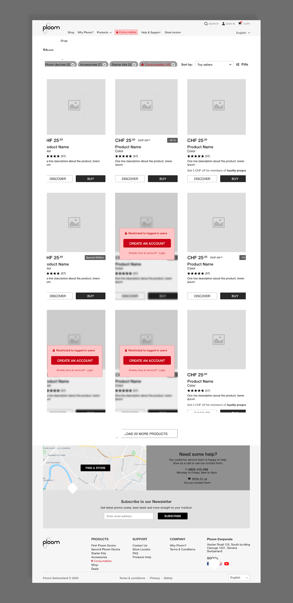
Design system
Before any screens, a design system was built to carry the work. A typographic hierarchy, a colour palette split between product and accessibility passes, a grid, icon library, and form component set — all documented to support market adaptation without diverging from the brand. The reusable push block became the structural backbone of the site: a single component handling heroes, category banners, club CTAs, and editorial pushes — configurable by CMS editors without code.
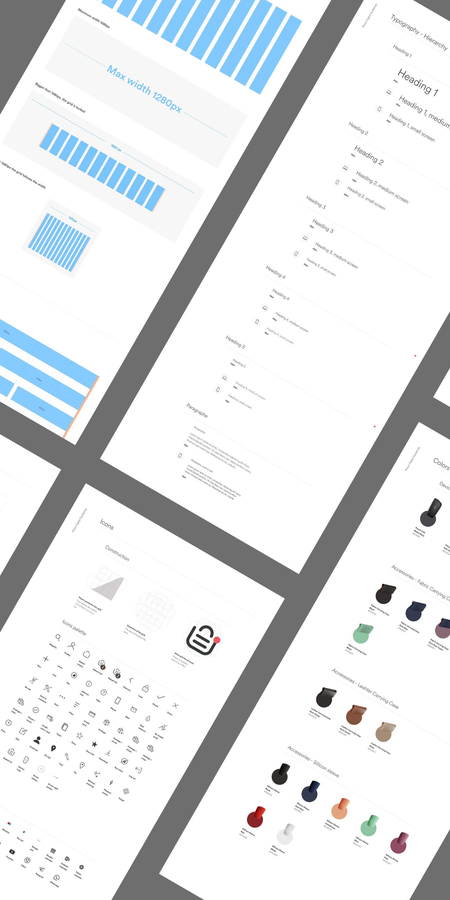
Global shell
The header and footer appear on every page across every market. The header handles navigation, account access, search, and the mini-cart in a single persistent bar. Product categories open inline in a flyout — no redirect, no context loss. On checkout, the full header and footer are replaced with stripped-down variants to reduce abandonment.
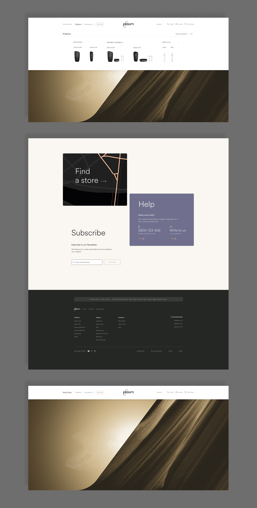
Age verification & account creation
When enabled, age verification appears on every page as a modal lightbox before any content is accessible. The button layout was a deliberate UX decision: confirm legal age sits on the left, underage on the right — not to make it easy for someone not paying attention to click through. Visitors who declare they're underage are redirected out of the site entirely.
Account creation includes a dedicated age verification step, requiring an identity document and expiry date. This was built into the registration flow rather than treated as a separate gate.
Homepage
The homepage is built from configurable push blocks and product selections defined through the CMS. Three layout versions exist — one per market configuration — but all share the same component logic. Product editors control which devices are surfaced, what order they appear in, and whether display rules differ for guest versus logged-in visitors.
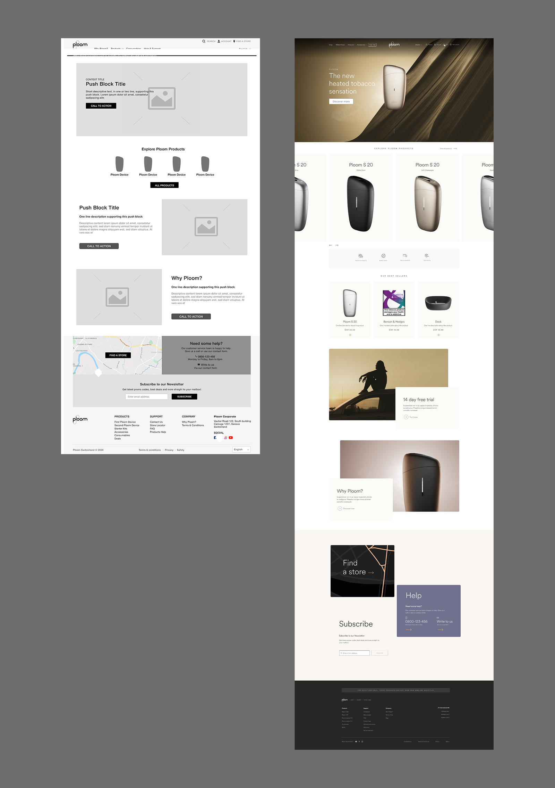
Shop & product pages
The shop listing supports category filtering, sort options, and promotional filters — all market-configurable. Products load in sets of eight rows with a load-more pattern that appends without reloading the page.
The product detail page carries the educational weight: a media gallery with video support, product name in H1, features and specifications in tabs, optional ratings and reviews with lazy loading. A sticky add-to-cart bar appears on mobile so the CTA is always reachable regardless of scroll depth.
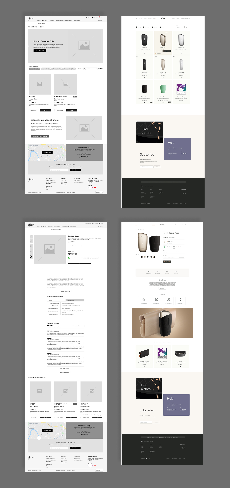
Cart
The cart is accessible without logging in. Checkout requires an account. Cart contents persist across sessions via browser cookies, with the expiry window set by each market.
The mini-cart appears near the cart icon whenever an item is added — if the visitor doesn't interact, it auto-dismisses after 7 seconds. If they start interacting it stays open until they navigate away. Removing an item triggers a confirmation modal with the product details shown before anything is deleted. Out-of-stock items surface separately with a batch-remove option.
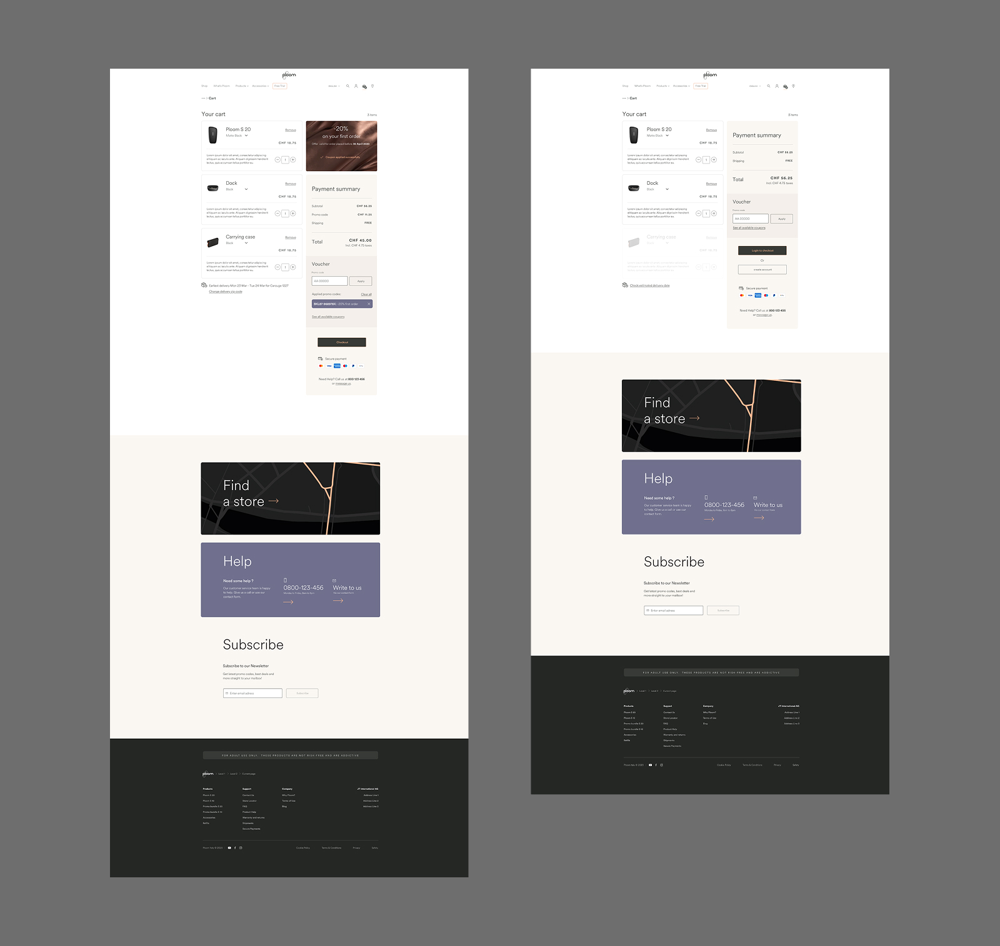
Checkout
Checkout requires login and runs in a single-page layout with all steps visible: delivery address, recipient and delivery options, payment, place order. A persistent order summary runs alongside every step, showing cart contents, applied coupon codes, and the running total — collapsible but expanded by default.
Saved addresses and payment methods pre-fill steps for returning customers. A different-recipient flow branches cleanly from the delivery step. Age confirmation and terms acceptance are required at the final step before the order can be placed.
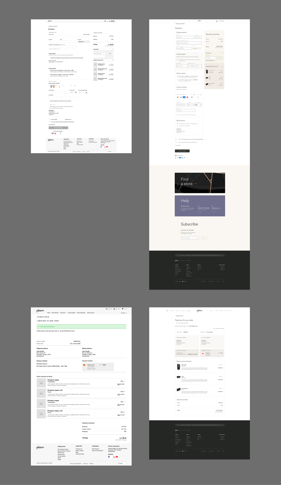
Deals & free trial
Markets that enable it get a dedicated deals page surfacing three deal types: product deals with direct add-to-cart, coupon deals with a one-click copy code and optional countdown, and special offers with inline terms. Coupon codes are also accessible from the cart promo code block and filterable from search.
A separate free trial page handles lead generation for Ploom's 14-day device trial — a form-based flow that doesn't require an existing account to submit.
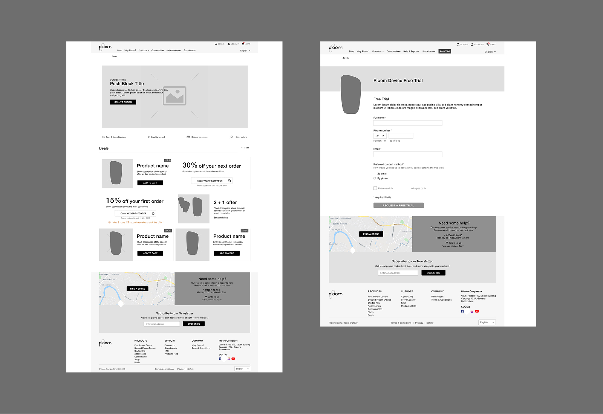
Account
The account section covers the full post-purchase relationship: order history with filtering, delivered order detail, address book, saved payment methods, device registration, and communication preferences. Each section is self-contained but follows the same component language. Device registration includes a how-to tutorial for customers who need guidance pairing their device.
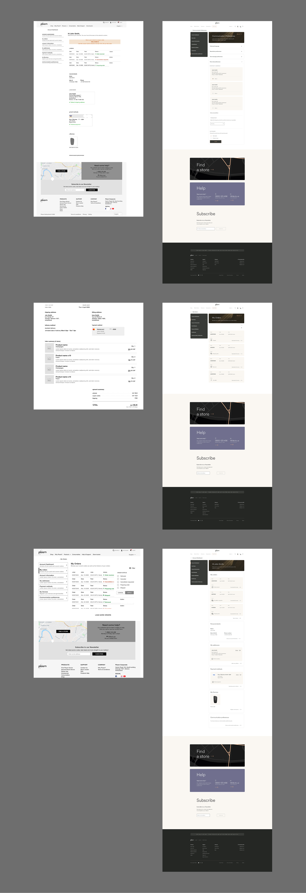
Ploom Club
The loyalty programme integrated directly into the store. Members earn points on purchases, referrals, and special events, and redeem them at checkout. The Club landing page was built to convert both new visitors and existing account holders.
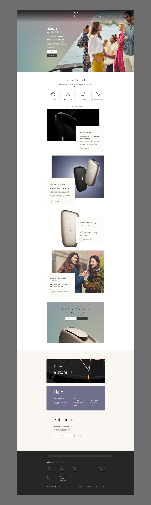
Content, search & support
The store operates as a content platform alongside a retail one. A full blog system handles articles, comments, and search. Global search returns products, articles, and FAQ results in separate tabbed result types. A help and FAQ section reduces support load, with product-specific help pages, how-to videos, and linked FAQ articles.
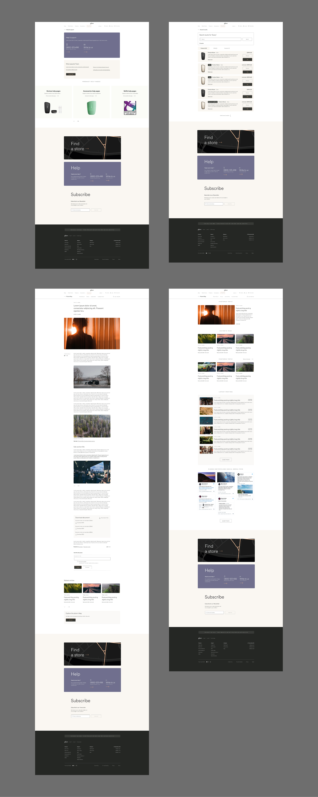
Store locator
The store locator is embedded in the global footer on every page. It gives visitors a path to purchase in person where online sales are restricted, and appears on product detail pages as a fallback for anyone not ready to buy online.
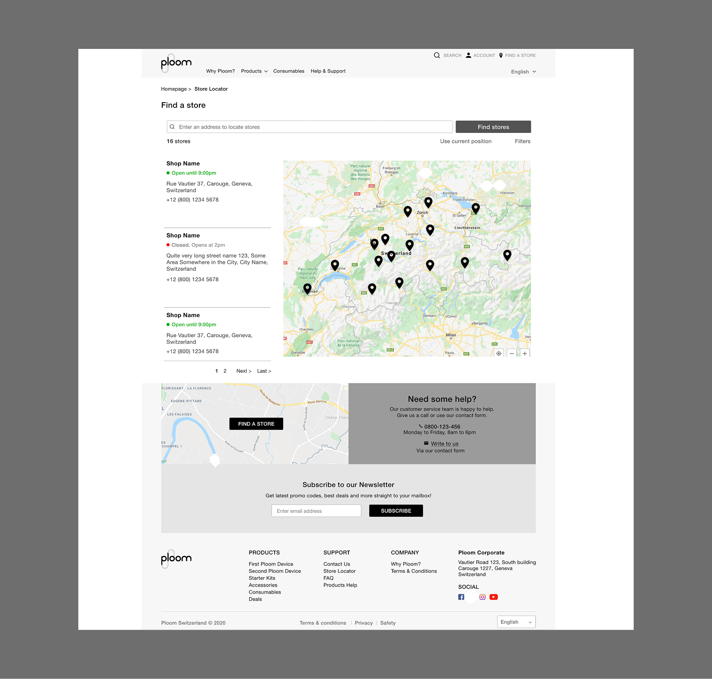
Outcome
A live e-commerce platform operating across multiple European markets, each configured to local regulation through a single modular design system — with a loyalty programme, a full content layer, and a compliance architecture built to adapt without requiring redesign.
Ploom Club
UX Designer · JTI / Ploom
The brief
Ploom Club is the loyalty programme I designed and spec'd for Ploom's European e-commerce platform. The brief: build a points-based loyalty system that earns and retains customers, sits natively inside the existing store, and does it without rebuilding what was already there.
This wasn't a standalone product. It had to live across the global header, the cart, checkout, account pages, and a new Ploom Club section of its own. Almost every surface of a system already in production.
The challenge
The platform was live and complex. Every loyalty touchpoint had to be threaded into flows that already existed — cart, checkout, account creation — without breaking them or requiring structural redesign.
A second problem: the programme was being built in phases. Phase 1 was foundational. Phase 2 extended it. Phase 3 added tiers. Decisions made early in Phase 1 had to hold up two phases later without backing anyone into a corner.
I took on UX design, UI design, and writing the full functional specifications: a component-level document covering every block, state, form field, validation rule, and responsive variant across 11 use cases.
The landing page
The Ploom Club section got its own navigation: Overview, Earn, Redeem, Refer a Friend. A sticky menu that follows the user as they scroll. When logged in, it surfaces the live points balance and a shortcut to the dashboard. For logged-out visitors, a Join Now CTA appears instead.
The landing page header does two different jobs depending on login state. For someone not yet a member: it explains the programme and converts them. For a logged-in member: it addresses them by name, shows their current balance, and tells them how many rewards they can access right now.
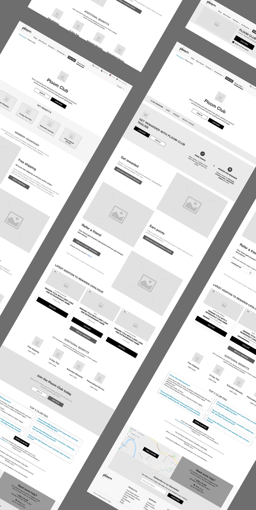
The dashboard
The member dashboard is the home base. Points balance, pending points, a shortcut to points history, a refer-a-friend block, and the full transaction log with filtering by category.
Pending points deserved their own treatment. Points earned on a purchase don't confirm immediately — they're held until the return window closes. Showing them as pending, rather than hiding them or folding them into the confirmed balance, gave members visibility without misleading them about what was actually spendable.
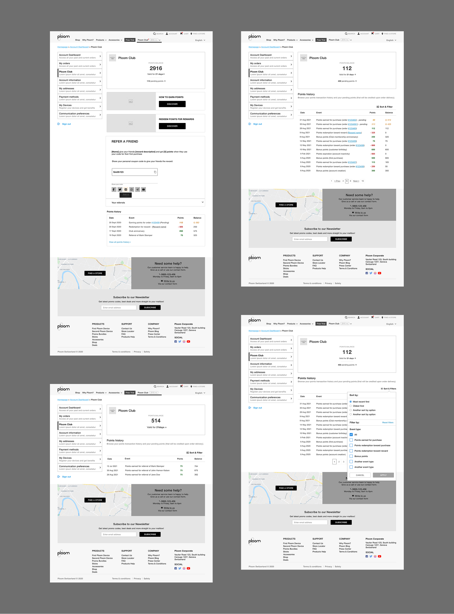
Earning points
Purchase earn is automatic and confirms at order confirmation. Two other earn mechanics needed dedicated design work.
Double-points promotions surface at the product detail page level: a push block appearing on individual products during a promotional window. It had to slot into the existing PDP layout without restructuring the page.
In-pack codes let customers enter codes found inside physical product packaging to earn points or enter a lottery. The flow handles a code entry form, a results state, and a specific variant for users who are not yet members — giving them a reason to create an account from the lottery result screen itself.
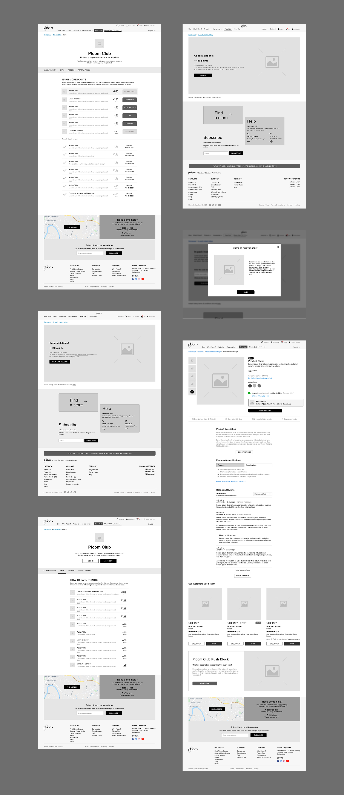
Redeem catalogue
The redeem page is a filterable catalogue of rewards. Sort and filter by category, reward type, and availability. A scroll-based load pattern that does not interrupt browsing.
Three reward types needed distinct states: standard rewards, limited-time rewards with urgency signalling, and rewards locked until the member reaches a minimum points threshold.
Reward detail pages have their own decision tree depending on the mechanic. A standard redemption runs through a confirmation lightbox. A 2x chances reward gives the member a double shot at a prize. Win and loss states both designed so the outcome feels considered rather than arbitrary.
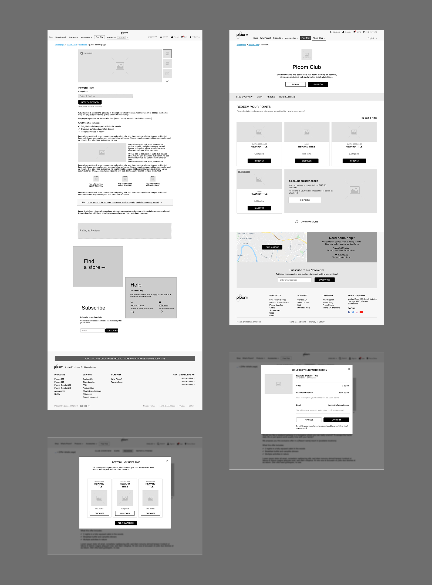
Referral programme
The referral mechanic has two entry points. At checkout: a dedicated step shows the referring member their code with a short explanation before asking them to share. At account creation: the registration form includes a referral code input field, and when a valid code is detected the UI confirms activation inline.
Both entry points needed success and failure states. A failed referral at checkout (expired code, already used) surfaces cleanly without killing the checkout flow.
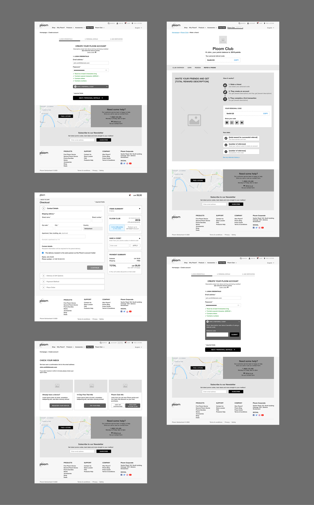
E-commerce integration
Loyalty touches seven distinct moments in the purchase flow. The cart shows a Club points summary block: current balance and points earnable on the current order. Coupon codes and loyalty points are separate inputs. Members can use both at once.
At checkout, a dedicated block lets members choose how many points to redeem against the order. An amount selector, a live balance update, and error handling for the edge cases: zero balance, partial balance, and trying to redeem more than the order total.
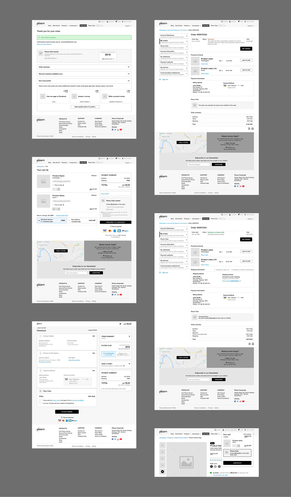
Phase 3: tiers
Phase 3 introduced three membership tiers: Silver, Gold, Black. The dashboard needed tier-aware views: current tier, points needed for the next level, and tier-specific alerts.
Two new alert states: a tier upgrade notification and a points expiry warning. The visual treatment for each tier needed to feel distinct without rebuilding the dashboard layout. Three colour treatments applied to the header block, the underlying structure unchanged.
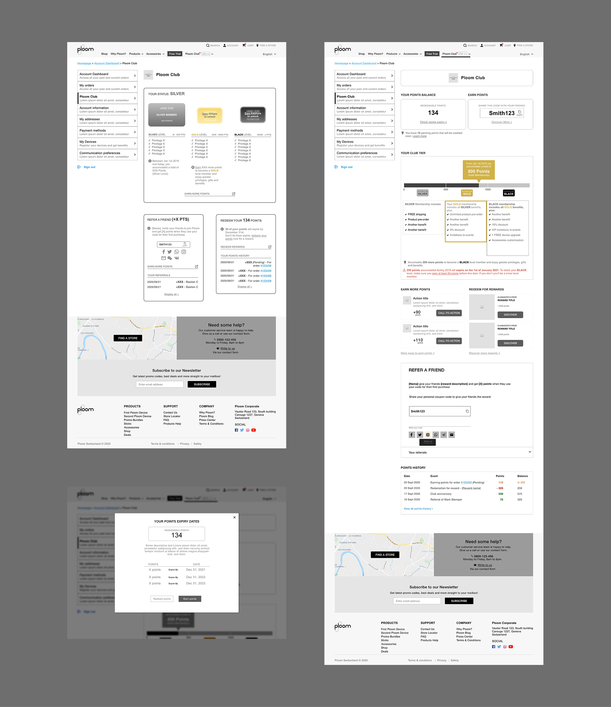
Outcome
A live loyalty programme integrated across the full Ploom e-commerce platform. Delivered in phases, with each one building on what shipped before without undoing it. Functional specifications handed to development covering 11 use cases end to end: every component, every state, every form field.
Ploom Kiosk
UI/UX Designer · JTI / Ploom
The brief
Ploom needed a digital experience for their retail stores. Running on iPads and mobile, it had to serve two very different kinds of visitors: someone curious enough to pick up a device and explore, and someone in a rush who just wants to take information away.
The work
The experience is built around a structured five-step onboarding flow. The opening screen plays a silent looping video — ambient, no commitment required. It draws attention without demanding it.

Step two handles age verification — a regulatory requirement turned into a considered moment rather than a friction point. Steps three and four move into the product experience: brand story, technology, and the full product range — designed to be self-guided, without needing a staff member to narrate it.


The final step brings the session to a close — surfacing the nearest Ploom stores and giving visitors a clear path to continue on their own device.

The full onboarding flow was mapped end to end, covering every state and transition across all five steps.

Two visual directions were developed for the iPad kiosk. A light variant keeps the palette clean and product-forward. A full-black poster variant gives the in-store display real presence — high contrast, typographically bold, designed to be seen from across the room.

Outcome
A retail in-store experience designed for Ploom stores, running on iPad kiosks and customer mobile devices — covering the full journey from ambient awareness to product education to store conversion.
Machine Learning CRM
Researcher & Designer
The brief
Research and implement a machine learning approach to lead nurturing and email drip campaigns inside a CRM. The goal was to improve how the company identified, scored, and communicated with prospects at every stage of the funnel, and to have it ship into the actual product.
The research
The work started with a thorough investigation into lead scoring. A lead score is built from two dimensions: FIT, how well a prospect matches the ideal customer profile, and PAIN, how urgently they need what the product solves. Getting that balance right is what determines whether a sales team spends its time on the right people.
The research identified a common mistake in scoring systems: over-categorisation. Most teams use A, B, C, D buckets or hot/warm/cold labels, which creates confusion and almost no actionable difference between adjacent categories. The approach we designed simplified this to a single numerical score with one meaningful threshold: SDR-ready or not.
The ML angle
Standard lead scoring is static. You run analysis once, assign weights to factors, and leave it. The problem is that prospect behaviour changes constantly, and a static model drifts.
The implementation introduced predictive scoring: the model adjusts lead scores in real time as prospects interact with the product. As new behavioural data comes in, the score updates. Sales teams always see a current picture, not one based on last month's analysis.
Drip campaigns and segmentation
The second half of the work covered how drip email campaigns should be structured to support the scoring system. Segmentation was central to this: the same email to everyone is a waste. Once you have lead scores and profile data, campaigns can be tailored by role, vertical, and pain point. Each segment gets communication built around where they actually are in the funnel.
Outcome
A research document covering the full theory and implementation framework, shipped into the company's live CRM. Predictive lead scoring and segmented drip campaigns running in production.
Bellamio
Branding, Print & Web Design
{kind=link}
{kind=link}
{kind=link}
{kind=link}
{kind=link}
{kind=link}
{kind=link}
{kind=link}
{kind=link}
{kind=link}
{kind=link}
{kind=link}
{kind=link}
{kind=link}
{kind=link}
{kind=link}
{kind=link}
{kind=link}
{kind=link}
{kind=link}
{kind=link}
{kind=link}
{kind=link}
{kind=link}
{kind=link}
{kind=link}
{kind=link}
{kind=link}
{kind=link}
{kind=link}
{kind=link}
{kind=link}
{kind=link}
Camera
Photography
Overview
A personal photography selection. Taken across different years and locations. Paint, sculpture, light, food, wine.
{kind=link}
{kind=link}
{kind=link}
{kind=link}
{kind=link}
{kind=link}
{kind=link}
{kind=link}
Pre-Post-Prod
Video Production & Direction
Overview
Three video production projects shot in Istanbul. Restaurants, yachts, and a paint factory.
Project 1 — Istanbul restaurant
A restaurant on the Anatolian side of Istanbul, overlooking the Bosphorus. Food, wine, good vibes, drone shots. From pitch to final shot list. Final render plus two extras.
Final render Extra 1 Extra 2Project 2 — Luxury yacht
Sailing without sails in the south sea of Marmara. A few days of logistics: moving the boat from its Istanbul dock, a chef on board for the menu display, speed boats for exterior shots, keeping the gear dry. One final render.
Final renderProject 3 — Paint factory
A brand new paint factory. Cool shots, clean lines, that's it. One final render.
Final render